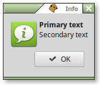
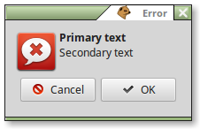
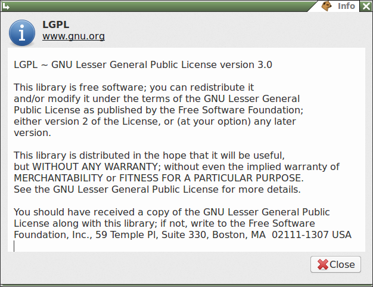

There are five pre-built modal dialogs in EuGTK, which you can use in your own programs to save time and typing, while making your program code much easier to read and maintain. They require only one line of code, whereas using GTK's Dialogs or MessageDialogs can require many lines of code.
Dialogs have a title, a primary text item, a secondary text item, plus one or more buttons.
Note that each dialog has different default titles, icons and buttons. The primary and secondary text however, must be supplied by the programmer.
All defaults can be overridden when creating a dialog. The parameters to the dialog are shown below. All are optional, if left blank, defaults will be used.
|  |  |
 |
 |
|  | |
| A Custom dialog (above) is available which can contain almost anything you want. See test87 for an example. | |
Items in square brackets [] are optional
Primary and Secondary text can be marked up as desired. [optional] parameters can be left empty, defaults will be used. Parameters are positional, separated by commas.
Most often, these are used without any of the optional items.
Eu fills in useful defaults. This makes it quick and easy to code pop-up dialogs - examples:
if Question(,,"File Changed","Do you want to save it?") = MB_YES then
-- save the file...
Info(,,"Text Saved To",sprintf("filename: %s",{file}))
To make creating dialogs easier, EuGTK now allows named parameters as well as positional parameters. For an example, see test228.
Important note:
In order to allow commas in text, the parameter key/value pairs must be
separated with a colon, not a comma!
Parameter names and examples:
Modal dialogs lock you out of doing other things until you reply to them, then return various values when dismissed via button clicks
or the titlebar 'close' button. These values are:
All the above built-in dialogs are by default modal, in that they capture the program focus until they are dismissed. This is probably appropriate for most notification purposes. For places where you need non-modal dialogs which you can leave on the screen while you work on other windows in the same program, you'll have to do this a different way.
Why, you ask?
Because the reason for leaving dialogs on the screen is so they can interact with your code, perhaps changing items in other windows in response to changes in dialog options. I can't predict what those options and connections might be, so I can't provide a ready-to-use dialog.
A non-modal dialog needs to be able to trigger actions before closing, since it can remain on the screen for as long as the user wants. Therefore, the dialog's buttons must be connected to user-written functions prior to adding them to the dialog.
To add buttons to a dialog, use the following syntax:
-- for one button
object btn = {{"gtk-ok",say,"OK"}}
-- say is the call_back to your function Say(),
-- and "OK" is text to send to the function.
-- or, for more than one
object btns = {
{"gtk-ok",say,"OK"}, -- as above
{"gtk-no",_("Nope"),"No way, Jose!"},
-- call your local Nope() function,
--passing a message to Jose as data
{"gtk-about","About"}} -- call your global About() function
Custom(win,"Fonts Help","Instructions",help_text,btns)
Most often, you will want to add some control(s) other than buttons to a non-modal dialog, for example, one or more color chooser buttons, or a font chooser, or perhaps some text or an image. These would look out of place if they were added to the button area of a dialog, where people expect to see only the standard "OK", "Help", or "Cancel" buttons, for example.
Instead, you should add these to the dialog's content area. Create the item and pass the handle of this item as the Addon (10th) parameter to the dialog. If you need several, pack them into a container and pass the handle of the container. See test200.ex, where the color-chooser button is added to the content area.
Note: It is wise to limit the use of non-modal dialogs, since they tend to clutter up the screen, and get in the way of people who are trying to get work done. If you're using lots of these, you are most likely doing something wrong. Menu options, sidebars, or moveable panes are often better substitutes.